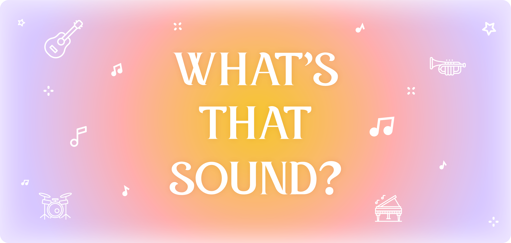
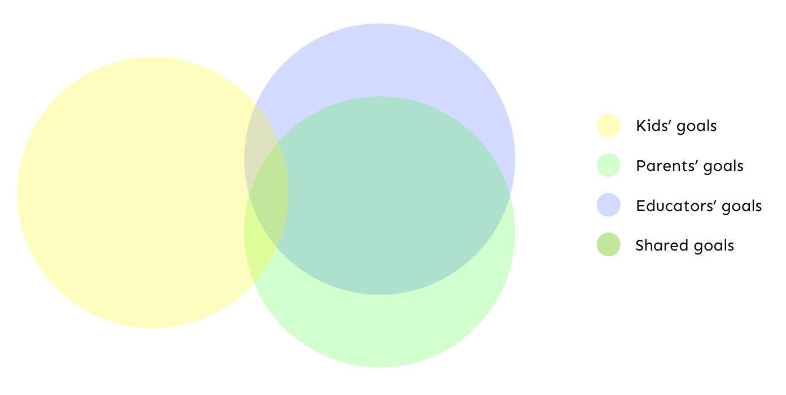

An AR powered music education mobile app for young children
DESIGN BRIEF
Musical instruments help children gain experiences in relation to sounds. Timbre — also known the “colors” of the sound — is the quality that makes a sound unique. Timbre exploration helps young children develop sensitive listening skills that are critical to learning language, music, and more! What’s That Sound is a music learning application that aims to train the listening skills of 3-5 year old children by exploring different sounds of instruments through gameplay!
ROLE
UX Research
Strategy
Usability Testing
AR development
Visual design
Product design
TECHNOLOGY
Adobe Illustrator
Adobe XD
Unity
C#
PROBLEM
Exposing children to everything and anything musical is a common goal for most parents, but the extent of exposure at home usually doesn’t go beyond passive listening. So what can I do as a designer to push that boundary and better yet create a fun and engaging music learning experience for both parents and children altogether?
RESEARCH
Designing an educational digital product for little children means designing for three segments of audiences with very different goals in mind: the children, their parents and the educators!
I definitely did not realize how much of a challenge this was going to be, but I was really inspired by the opportunities to learn, improve and become an even better and inclusive designer while working on this project!

I conducted a total of 8 1:1 interviews with 4 parents of 3-5 year old children, 3 early childhood / preschool music teachers and 1 retired choir conductor.
The main objectives of the research were:
- To identify pain points / frustrations the participants experience while engaging children with music and music instruments
- To identify areas of opportunities from what the participants value in music education for children
- To explore different techniques to engage young children
- To understand their perspectives on AR technology
SYNTHESIS
- Many parents expressed that they value all kinds of musical exposure for their children, because they would like them to develop their own appreciation for music as well as the ability to express themselves through music (dancing, singing, composing, etc.)
- One parent voiced the challenge of not knowing enough about music and education; therefore, she doesn't know how to educate her child in that aspect
- Music is used as a tool to help children build academic skills - language literacy, aural development, motor skills, speech articulation, comprehension, etc.
- The ability to distinguish different sounds of instrument is a precursor to hearing the differences in letter sounds